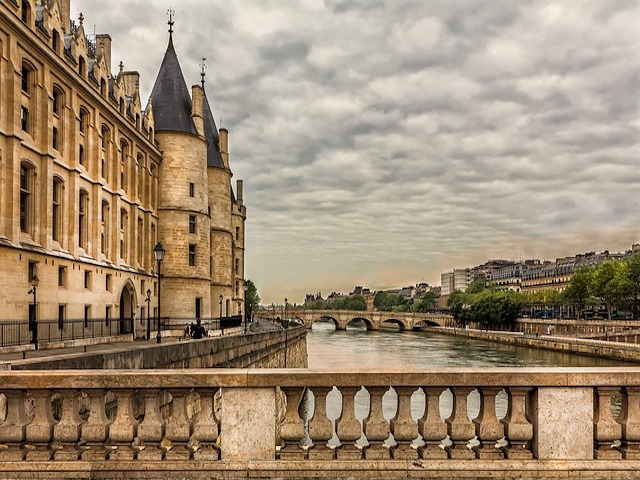

Arc de Triomphe

The Arc de Triomphe is located on the Champs-Élysées. If you would like to the top of the monument, you will have to purchase tickets, travel underneath the traffic through an underground tunnel, and climb 40 stairs. While you are there, the shopping and food near the Champs-Élysées is excellent.
Eiffel Tower

The Eiffel Tower has three main floors, the first floor, the second floor, and the top floor. The first floor offers glass floors and snack options while the second floor offers a Michelin-starred restaurant, a macaroon bar, and a gift shop. The top floor contains two levels and includes a historical reconstruction of Gustave Eiffel’s office and a champagne bar. If you go at night, the Eiffel Tower will have a light display.
Conciergerie
The Conciergerie has a long history. It first served as a Gothic palace, then the building served a judicial role, and finally, the building was a revolutionary prison. Marie-Antionette was the Conciergerie’s most famous prisoner. The site is open every day from 9:30am until 6:00pm.
Louvre
The Louvre is a world-renowned art museum. Of course there is the Mona Lisa, but there are also other exhibits. These exhibits include the Egyptian Antiquities, Greek, Etruscan, and Roman Antiquities, Near Eastern Antiquities, Islamic Art, Paintings, Sculptures, Decorative Arts, and Prints and Drawings. My favorite thing to see in the Louvre is the Medieval Louvre exhibit, which is the original ruins of the castle that existed from 1190 until the 1500s.
Notre Dame

Notre Dame is a medieval Catholic cathedral in the heart of Paris. It is considered one of the finest examples of French Gothic architecture and has beautiful stained-glass windows.
Versailles

Versailles is open every day from 9:00am to 5:30pm except on Mondays. You can see the Royal Chapel, the King’s State Apartments, the Hall of Mirrors, the King’s Private Apartments, the Queen’s Apartments, and the Gallery of Great Battles. In addition to the main palace, you can also explore the gardens and fountains, the coach gallery, and the Trianon countryside palaces. You should visit the main palace in the morning and the other options in the afternoon, as they do not open until 12:00pm.